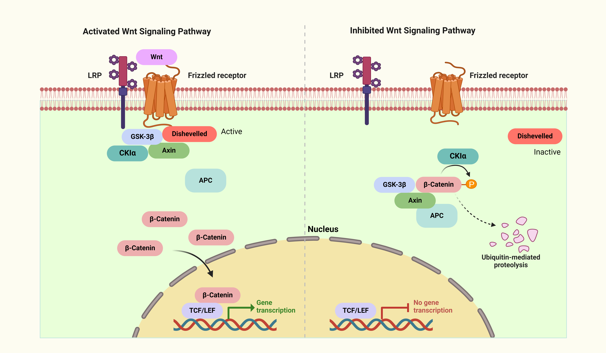

Wnt signaling pathway
| Pathway Name: Wnt signaling pathway - Homo sapiens (human) |
| Pathway Source: KEGG Pathway |
| Genes involved in Wnt signaling pathway: APC, CK1, |
- 
WNT signaling pathways in colorectal cancer (CRC). Wnt proteins are secreted morphogens that are required for basic developmental processes, such as cell-fate specification, progenitor-cell proliferation and the control of asymmetric cell division, in many different species and organs. The interaction between FZD and LRP, which is brought about by the accumulation of secretory Wnt ligands, activates the dishevelled (DVL) protein. After being phosphorylated and activated, the dishevelled (DVL) translocates to the frizzled (FZD) receptor. After separating from the degradation complex, the Beta-catenin builds up in the cytoplasm and then moves into the nucleus. The accumulation of Beta-catenin in the nucleus may interact with the transcription factor (TCF) or the lymphoid enhancer factor (LEF) to activate target genes involved in the development of colorectal cancer. These target genes have a role in both transmission and proliferation. When Wnt induction is not present, cytoplasmic Beta-catenin is present in the destruction complex and is phosphorylated by Glycogen synthase kinase-3 beta (GSK3 beta) and casein kinase 1 (CK1). After that, this complex enlists the Beta-TrCP E3 linker (Beta-transducin repeat-containing protein, an E3 ubiquitin ligase) and then degrades Beta-catenin via the proteasome. The figure was created with BioRender.com (accessed on 30 May 2024) and was exported under a paid subscription.